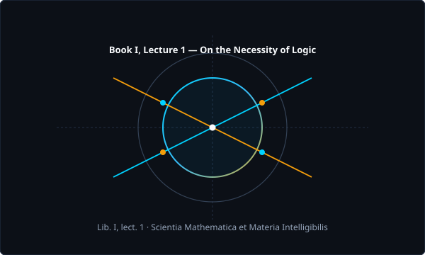

Book I, Lecture 1 — On the Necessity of Logic and the Most Certain Mode of Demonstration in the Mathematical Sciences¶
Liber I, Lectio 1 — De necessitate artis logicae et certissimo modo demonstrationis in scientiis mathematicis

[lib. 1 l. 1 n. 1] As Aristotle says at the beginning of the Metaphysics, the human race lives by art and reasonings: in saying which the Philosopher seems to touch upon a certain property of man whereby he differs from the other animals. For other animals are impelled to their acts by a certain natural instinct, whereas man is directed in his actions by the judgment of reason. And hence it is that various arts serve to bring human acts to completion easily and in an orderly manner. For art seems to be nothing other than a certain ordering of reason as to how human acts may arrive at their due end through determinate means. Now reason is not only able to direct the acts of the lower powers, but is also directive of its own act. For this is proper to the intellective part, that it reflect upon itself: for the intellect understands itself, and similarly reason can reason about its own act. If, therefore, from the fact that reason reasons about the act of the hand there was devised the art of building or of carpentry, through which man can exercise acts of this kind easily and in an orderly manner, by the same reason a certain art is necessary that is directive of the very act of reason itself, through which, namely, man may proceed in the very act of reason in an orderly manner, easily, and without error.
[lib. 1 l. 1 n. 2] And this art is logic, that is, rational science. Which is rational not only from the fact that it is according to reason (which is common to all arts), but also from the fact that it is concerned with the very act of reason itself as with its own proper matter.
[lib. 1 l. 1 n. 3] And therefore it seems to be the art of arts, because it directs us in the act of reason, from which all arts proceed. One must therefore take the parts of logic according to the diversity of the acts of reason.
[lib. 1 l. 1 n. 4] Now there are three acts of reason, the first two of which belong to reason insofar as it is a kind of intellect. For one action of the intellect is the understanding of indivisibles or incomplex things, according to which it conceives what a thing is. And this operation is called by some the informing of the intellect or imagination through the intellect. And to this operation of reason is ordered the doctrine that Aristotle hands down in the book of the Categories. The second operation of the intellect, however, is the composition or division of the intellect, in which truth or falsity is already found. And this act of reason is served by the doctrine that Aristotle hands down in the book Peri Hermeneias [On Interpretation]. The third act of reason, however, is according to that which is proper to reason, namely, to discourse from one thing to another, so that through what is known one may arrive at the knowledge of what is unknown. And the remaining books of logic serve this act.
[lib. 1 l. 1 n. 5] Now it must be observed that the acts of reason are similar, in a certain respect, to the acts of nature. Hence art too imitates nature insofar as it can. Now in the acts of nature a threefold diversity is found. For in certain things nature acts of necessity, in such a way that it cannot fail. In certain other things, however, nature operates for the most part, although at times it can fail of its proper act. Hence in these things there must necessarily be a twofold act: one that occurs in the majority of cases, as when a complete animal is generated from seed; the other when nature falls short of what is fitting to it, as when some monster is generated from seed owing to the corruption of some principle. And these three are also found in the acts of reason. For there is a certain process of reason that induces necessity, in which it is impossible for there to be a failure of truth; and through such a process of reason the certitude of science is acquired. There is another process of reason in which what is true is concluded in the majority of cases, yet without having necessity. The third process of reason, however, is that in which reason falls short of the true owing to the defect of some principle that ought to have been observed in reasoning.
[lib. 1 l. 1 n. 6] Now the part of logic that serves the first process is called the judicative part, inasmuch as judgment possesses the certitude of science. And because certain judgment concerning effects cannot be had except by resolving back into first principles, this part is called analytics, that is, resolutory. Now the certitude of judgment that is obtained through resolution comes either from the very form of the syllogism alone—and to this is ordered the book of the Prior Analytics, which treats of the syllogism unqualifiedly—or else, together with this, from the matter, because propositions that are per se and necessary are assumed—and to this is ordered the book of the Posterior Analytics, which treats of the demonstrative syllogism. The second process of reason, however, is served by another part of logic, which is called inventive. For discovery does not always possess certitude. Hence concerning those things that have been discovered, judgment is required in order that certitude may be had. Now just as in natural things, among those that act in the majority of cases, a certain gradation is observed (because the stronger the power of nature is, the more rarely does it fail of its effect), so too in the process of reason that is not accompanied by complete certitude, a certain gradation is found according as one approaches more or less closely to complete certitude. For through a process of this kind, sometimes, although science is not produced, belief or opinion is nevertheless produced on account of the probability of the propositions from which one proceeds: because reason leans wholly toward one part of a contradiction, albeit with fear of the other; and to this is ordered topics or dialectic. For the dialectical syllogism proceeds from probable premises, concerning which Aristotle treats in the book of the Topics. At other times, however, belief or opinion is not completely formed, but rather a certain suspicion, because reason does not lean wholly toward one part of the contradiction, although it is inclined more to this side than to that. And to this is ordered rhetoric. At still other times, estimation alone leans toward one part of a contradiction on account of some representation, after the manner in which a man conceives a loathing for some food if it is represented to him under the likeness of something loathsome. And to this is ordered poetics; for it belongs to the poet to lead one toward something virtuous through some fitting representation. Now all of these pertain to rational philosophy, for to lead from one thing to another belongs to reason. Finally, the third process of reason is served by the part of logic called sophistic, concerning which Aristotle treats in the book of Sophistical Refutations.
[lib. 1 l. 1 n. 7] Setting aside the other parts of logic, therefore, our present attention must be directed to the judicative part, insofar as it is handed down in the book of the Posterior Analytics. This book is divided into two parts: in the first, he shows the necessity of the demonstrative syllogism, with which this book is concerned; in the second, he determines the nature of the demonstrative syllogism itself, at We suppose ourselves to know, et cetera.
[lib. 1 l. 1 n. 8] Now the necessity of anything ordered to an end is taken from its end; and the end of the demonstrative syllogism is the acquisition of scientific knowledge; hence, if scientific knowledge could not be acquired through syllogism or argument, there would be no necessity for the demonstrative syllogism. Now Plato held that scientific knowledge in us is not caused by syllogism, but by the impression of ideal Forms upon our souls, from which he also said that natural forms flow out into natural things, holding these natural forms to be certain participations of Forms separated from matter. From this it followed that natural agents did not cause forms in lower things, but merely prepared matter to participate in the separated Forms. And similarly he held that scientific knowledge is not caused in us through study and exercise, but that impediments are merely removed, and man is brought back, as it were, to the recollection of things that he naturally knows from the impression of separated Forms. The teaching of Aristotle, however, is contrary on both counts. For he holds that natural forms are reduced to act by forms that exist in matter, namely, by the forms of natural agents. And similarly he holds that scientific knowledge comes to be in us in act through some knowledge pre-existing in us. And for scientific knowledge to come to be in us in this way is for it to come about through a syllogism or an argument of whatever kind. For in arguing we proceed from one thing to another.
[lib. 1 l. 1 n. 9] In order to show the necessity of the demonstrative syllogism, therefore, Aristotle sets down at the outset that knowledge is acquired in us from some pre-existing knowledge. Accordingly, he does two things: first, he establishes his proposition; second, he teaches the mode of foreknowledge, at Now it is necessary in two ways, et cetera. Concerning the first he does two things. First, he introduces a universal proposition containing what is proposed, namely, that the reception of knowledge in us comes about from some pre-existing knowledge. And therefore he says, Every teaching and every learning, and not every knowledge, because not all knowledge depends upon prior knowledge: for that would be to proceed to infinity. Every reception of learning, however, comes about from pre-existing knowledge. Now the names teaching (doctrina) and learning (disciplina) pertain to the acquisition of knowledge. For teaching is the action of one who makes something to be known, whereas learning is the reception of knowledge from another. Yet teaching and learning are not taken here insofar as they relate solely to the acquisition of scientific knowledge, but with respect to the acquisition of knowledge of whatever kind. This is clear because he manifests this proposition even in disputative and rhetorical arguments, through which scientific knowledge is not acquired. On this account, too, he does not say from pre-existing scientific knowledge or understanding, but universally from knowledge. Moreover, he adds intellective in order to exclude the reception of sensitive or imaginative knowledge. For to proceed from one thing to another belongs to reason alone.
[lib. 1 l. 1 n. 10] Second, when he says, For the mathematical sciences, et cetera, he manifests the aforesaid proposition by induction. And first, in demonstrative matters, in which scientific knowledge is acquired. Now among these the mathematical sciences hold the principal place, on account of their most certain mode of demonstration. And consequently all the other arts follow as well, because in all of them there is some mode of demonstration; otherwise they would not be sciences.
[lib. 1 l. 1 n. 11] Second, when he says, And similarly, et cetera, he manifests the same thing in disputative or dialectical arguments, which employ syllogism and induction, in both of which one proceeds from something foreknown. For in a syllogism the knowledge of some universal conclusion is received from other known universals; whereas in induction a universal is concluded from singulars, which are manifest with respect to sense.
[lib. 1 l. 1 n. 12] Third, when he says, And similarly rhetorical arguments, et cetera, he manifests the same thing in rhetorical matters, in which persuasion is effected through an enthymeme or through an example, and not through a syllogism or a complete induction, on account of the uncertainty of the matter with which rhetoric deals, namely, the singular acts of men, in which universal propositions cannot be assumed with truth. And therefore in place of the syllogism, in which there must necessarily be some universal proposition, it uses an enthymeme; and similarly in place of induction, in which a universal is concluded, it uses an example, in which one proceeds from a singular not to a universal, but to a singular. Hence it is clear that just as an enthymeme is a kind of truncated syllogism, so an example is a kind of imperfect induction. If, therefore, in syllogism and induction one proceeds from something foreknown, the same must be understood in the enthymeme and the example.